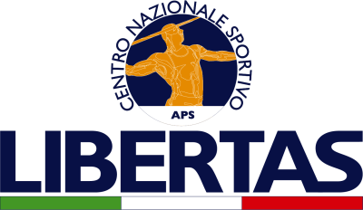

La New Style Dance, è un centro innovativo per la danza a 360°. Oltre a offrire corsi per allievi di ogni
età e livello, propone percorsi formativi per insegnanti con rilascio di diploma e tesserino tecnico
Libertas.

La nostra missione è creare una comunità unita dalla passione per la danza e offrire
esperienze uniche.
Sono disponibili corsi per diventare istruttori di:
Per il 2° e 3° anno, si introdurrà:
• Danze Caraibiche
• Danza Classica
• Fitness
• Pilates
Per informazioni e costi:
• Giovanna Villa: 3384421180
• Email: info@newstyledance.it